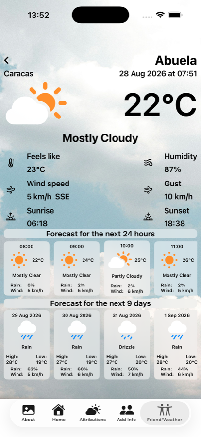

En Venezuela, «Llegó Pacheco» quiere decir que llegó el frío. La expresión recuerda a Antonio Pacheco, un cultivador de flores que bajaba de Galipán, en el cerro El Ávila, a vender flores en Caracas a finales de cada noviembre. Su llegada coincidía con el inicio de la temporada fría, y el nombre se quedó pegado a la temporada. La app lleva el nombre de la expresión, no del florista.
SwiftUI y Angular no pueden compartir un runtime, así que las dos versiones no pueden compartir el código de lo que hace que la app se sienta como ella misma: la lluvia y la nieve que caen sobre una fotografía, el viento que la desplaza despacio, el degradado que mantiene el texto legible encima. Lo que comparten son los números: la misma cantidad de partículas, la misma intensidad del degradado, cambiados en los dos sitios a la vez o en ninguno. Es una disciplina, no una garantía del compilador, y ha aguantado.
La mayor parte de la app va así, a la par. Lo que todavía no: catorce de las fotografías vienen de una tanda anterior y tienen menos resolución que el resto. Se nota si miras de cerca, no a simple vista. Están en la lista.
La app de iPhone obtiene los pronósticos de WeatherKit de Apple, que se autentica a través de la propia cuenta de desarrollador. Una web hecha de archivos estáticos no tiene una cuenta así detrás de la que esconderse, de modo que la versión web le pregunta a Open-Meteo, que no necesita clave alguna. Por qué esa única restricción da forma a toda la versión web, y por qué las dos versiones pueden discrepar de vez en cuando sobre el tiempo de mañana, es el tema de Pacheco ya está en la web.
iPhone. SwiftUI, Swift 6, iOS 17.2 o posterior. WeatherKit para los pronósticos, SwiftData para los amigos guardados, MapKit para buscar lugares. 45 tests.
Web. Angular 22 y TypeScript. Se puede instalar, y sigue funcionando sin conexión: la app, los dos idiomas y todas las fotografías que ya hayas visto. Open-Meteo para los pronósticos. 190 tests.
Las dos versiones se llevan dos líneas de tamaño: unas 4.300 líneas cada una.
Pacheco en el
App Store — gratis, para iPhone, iOS 17.2 o posterior.
Pacheco en el navegador — en cualquier dispositivo,
sin instalar nada.
Para la ficha del App Store: Soporte · Privacidad